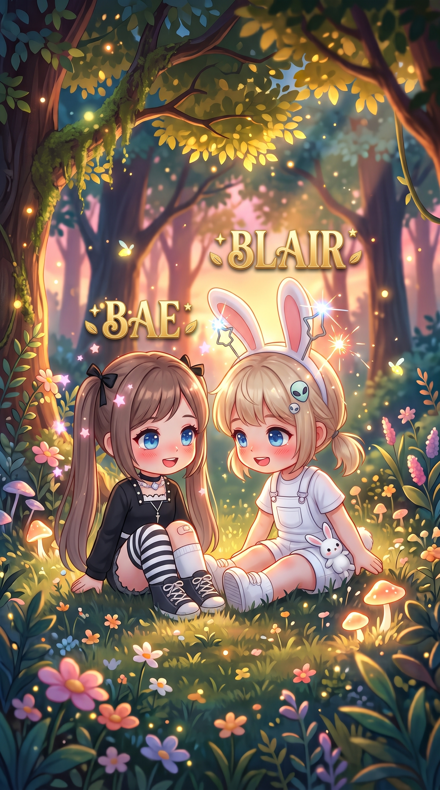
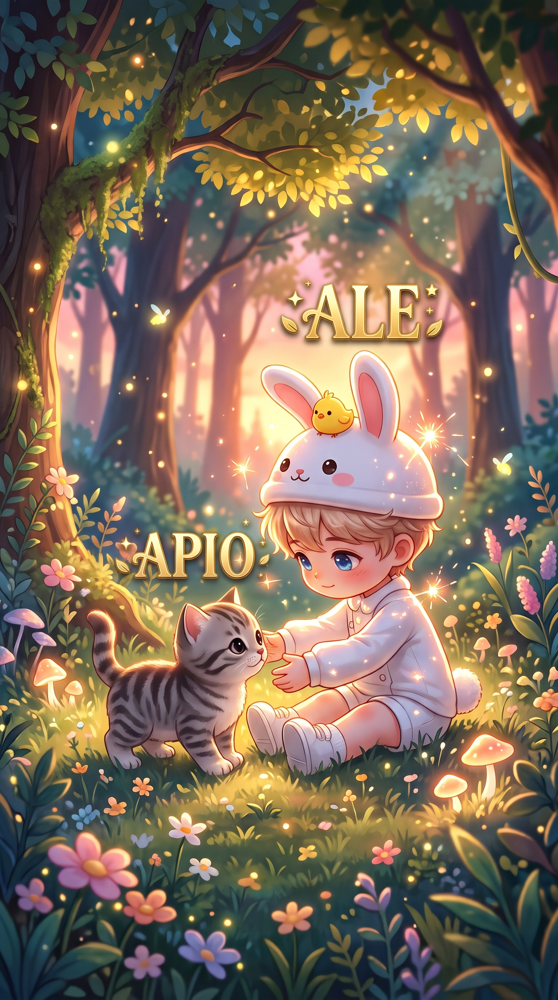

💖 Nuestras invitadas

Coloca img1.jpg en esta carpeta para mostrar a las invitadas.Retos, eliminación, música y diversión. Marca cada actividad a medida que avanza la competencia.
🏆 ¡Que gane el mejor!Conoce a las invitadas y a quienes organizan esta aventura.

Coloca img1.jpg en esta carpeta para mostrar a las invitadas.
Coloca img2.jpg en esta carpeta para mostrar a los anfitriones.Usa una pista musical o canta con el micrófono. Los participantes deben adivinar la canción. Duración sugerida según tus notas: 30 minutos.
Canciones anotadas:
Retos pendientes anotados para la fase Candela:
Agrega jugadores, suma o resta puntos y elimina participantes. Los datos se guardan automáticamente en este dispositivo.
Anota ganadores, eliminados o puntuaciones. Se guarda en este navegador.